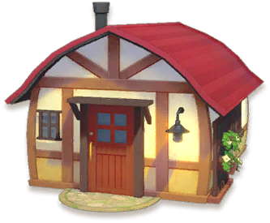
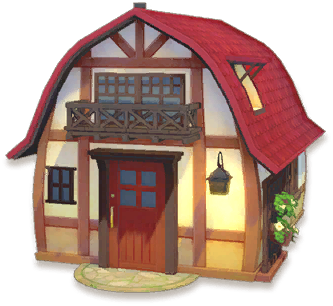
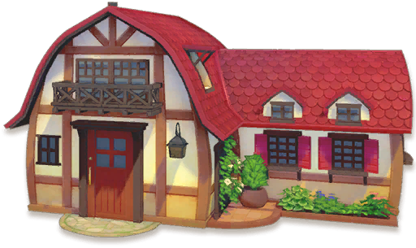
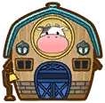
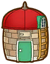
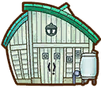

Reparaciones y mejoras


Cuando el jugador llega a la antigua granja de su abuelo, se encuentra con un enorme bosque que ha crecido demasiado en la propiedad. En Story of Seasons: Pioneers of Olive Town , depende del jugador recuperar la tierra y someterla a su voluntad. El jugador encontrara instalaciones dañadas y algunas instalaciones menores que encontraras en la granja. ¡A lo largo del camino, la granja se expandirá y pasará por mejoras!.
Casa
En Pioneers of Olive Town , comenzarás desde cero. ¡Literalmente! El jugador comienza con una tienda de campaña sencilla y una fogata, y puede mejorar su morada con los materiales adecuados. La tienda viene con una cuna desplegable, radio, algunos libros y un calendario.
| Nombre | Materiales requeridos | Costo |
|---|---|---|
 Cabaña de madera |
|
2.000 G |
|  Casa pequeña |
|
30.000 G |
|  Casa Grande |
|
100.000 G |
|  Hermosa casa |
|
1.000.000 G |
Edificios agrícolas
A medida que limpias el terreno, descubrirás diferentes instalaciones, incluidos graneros rotos y gallineros desgastados. Todas las instalaciones comienzan "en ruinas" cuando son descubiertas. ¡Con solo un poco de esfuerzo y mucha dedicación, puedes devolver estos edificios a su forma adecuada!. Las instalaciones agrícolas restauradas se pueden mover por tu granja y puedes comprarle más a Nigel en su tienda. ¡Cada instalación restaurada cuenta para tu Progreso Pionero total, que se puede seguir desde la subsección Registros del menú Estado en tu Cuaderno!
En estos edificios no son unicos, es decir que puedes tener más del mismo tipo de edificio construido en tu granja y tambien incluye a las verciones mejoradas de estos edificios.
| Nombre | Materiales requeridos | Capacidad animal |
|---|---|---|
|  Granero Normal |
|
5 |
 Granero Grande |
|
10 |
| Nombre | Materiales requeridos | Capacidad animal |
|---|---|---|
 Gallinero Normal |
|
5 |
 Gallinero Grande |
|
10 |
Establo
Los caballos no utilizan el establo y deben alojarse en un establo. Del mismo modo, el lobo montable se guarda en el establo cuando no se utiliza como transporte.
| Nombre | Materiales requeridos | Capacidad animal |
|---|---|---|
 Gallinero Normal |
|
1 |
Silo
Es un edificio diseñado para guardar forraje pero para usarlo primero se debe repara el Silo que nesesita 20 ladrillos y 20 lingotes de plata. Colocar forraje en el silo para almacenarlo o utilizarlo con el comedero automático. El forraje colocado en el ensilaje se convertirá en forraje de lujo al día siguiente.
Tambien puedes mejorar el edificio, pero la vercion mejorada constara como otro edificio independiente, con esto tendra dos silos y podra guardar mas forraje. El silo normal solo tiene espacio para tener 40 forraje y el silo grande tiene espacio para tener 100 forraje.
| Nombre | Materiales requeridos | Capacidad de forraje |
|---|---|---|
 Silo Normal |
|
10 |
|  Silo Grande |
|
100 |
Planta de Hidrocultivo
La planta de hidrocultivo es uno de esos edificios de Ciudad Oliva que están en mal estado y que tenemos que reparar si los queremos utilizar. Desde el primer momento llamó mucho nuestra atención y nos preguntamos si realmente podría sernos de utilidad para nuestra partida.
Para poder repararlo vamos a necesitar cuatro objetos que son algo difíciles de conseguir, por lo vas a necesitar un poco de paciencia, pero no te preocupes. En este artículo te vamos a explicar paso a paso como puedes obtener todos los objetos y reparar la planta de hidrocultivo fácilmente.
| Nombre | Materiales requeridos |
|---|---|
|  |
|
Instalaciones menores
Las Instalaciones menores son instalaciones que se encuentran rondando por la granja y podras sacarle probecho obteniendo, una vez encontrada lo podras comprar en la tienda.
| Nombre | Materiales requeridos |
|---|---|
 Pozo | - |
 Tronco de setas |
|
 Colmena |
|
Pozo
Una instalación agrícola que permite sacar agua. Si tu regadera se queda sin agua, puedes rellenarla usando el pozo.
Tronco de setas
Si plantas esporas en un tronco de hongos, ¡brotarán pequeños hongos! Después de unos días, sus esporas serán hongos cosechables y completamente desarrollados. Solo podras usar un tipo de esporas por Tronco de setas
Colmena
Es una edificaion diseñado para la produccion de miel. Puedes colocar una flor junto a una colmena y este a su vez atraerá a las abejas. Después de unos días, podrás cosechar las colmenas cubiertas de miel. Puedes encontrar un colmena dañada y para repararla nesesitaras 20 Madera recia y 50 Hierba resistente y una vez reparado puedes usarlo.
Dependiendo de la flor que utilises en la colmena podras obtener una colmeda de miel.
| Colmenas | Flores |
|---|---|
| Colmena de miel |
|
| Colmena de miel en panal |
|
| Colmena de obreras |
|
| Conejo Rosa |
|
Una vez que tengas las colmenas de miel los puedes llevar a la Procesadora de miel para conseguir miel.